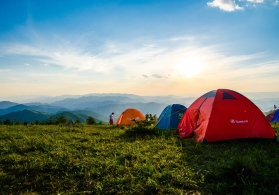
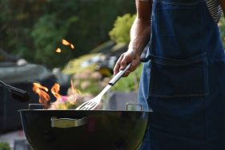
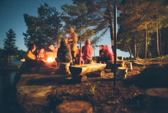

Snitko.Camp
Семейный палаточный лагерь
в бухте Петрова
Кемпинг семейного отдыха Snitko.Camp работает в летний период на базе отдыха «Бухта Петрова» с 15 июля по 31 августа 2022. Вы можете приехать как со своей палаткой и оборудованием, так и воспользоваться нашими вариантами размещения. В лагере есть вся инфраструктура для комфортного отдыха на природе. Чистейшее лазурное Японское море, белый песок и ограниченное количество отдыхающих.
Все необходимые удобства
- Электричество
- Летний душ
- Холодильник
- Туалет
-
 Кухонная зона
Кухонная зона
Несколько вариантов размещения
Привыкли к теплой и уютной квартире – выберите вариант размещения «Комфорт» и ни в чём себе не отказывайте. Для самый смелых и решительных – вариант «Эконом» для максимального единения с природой. А для тех, кто никак не может определиться, подойдёт вариант размещения «Стандарт».
Вкусная еда
В этом сезоне в Snitko.Camp работает повар — вы можете заказать завтрак, обед или ужин, а тем временем понежиться на берегу волшебного моря или сходить на экскурсию.
Тихий отдых
Мы особо дорожим атмосферой места и любим слушать вечернюю тишину. В лагере и на всей базе запрещено после 22 часов нарушать «Режим тишины». Вы сможете хорошо отдохнуть без громкой музыки и буйных соседей. Только природа, ваши близкие и вы.